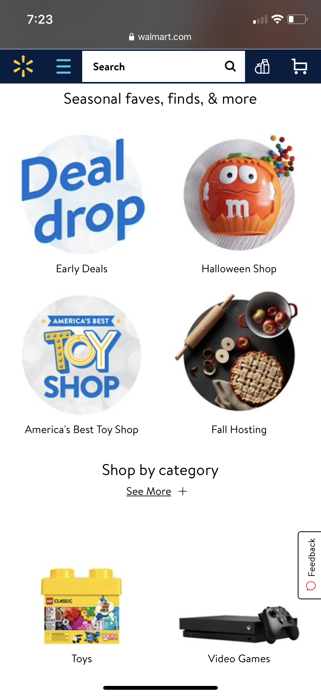
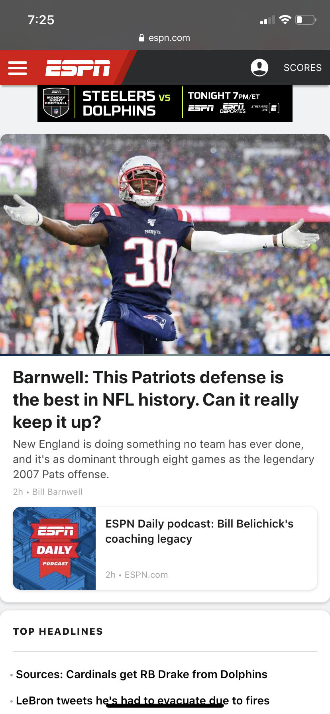
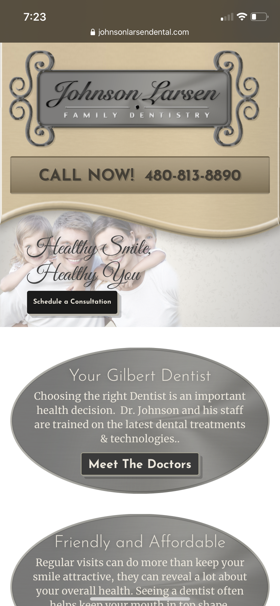

PARC Alignment
https://www.walmart.com
In this particular photo, every element on the page fits well and is easy on the eye. The “Seasonal faves, finds, & more” banner is centered on the page. What stands out most on the page, however, are the buttons that lead to different categories (Early Deals, Halloween Shop, etc.). The two banners that we see in the picture are both center aligned and helps the user distinguish different areas of the website. Each of the buttons are aligned with each other and gives an overall feeling that the site actually had some thought put in to it and wasn’t thrown together last minute.
PARC Proximity
https://www.espn.com
Being a mobile website, things are almost required to be closer together than if viewing the website on a computer. That being said, ESPN does a good job of grouping relevant topics together instead of having it scattered throughout the website (though you can see in the headlines that one article is talking about football and the other is talking about basketball). In the picture, you can see that they put together the game time for the Steelers and Dolphins game, an article about the Patriots defense, and a podcast about Patriots head coach, Bill Belichick. This keeps readers not having to scroll all over the website looking for topics/sports that interest them. A website that has good proximity is very convenient for the user.
PARC Repetition
https://www.johnsonlarsendental.com
On this dentist’s website, the repetition I see the most is with the gray circles they have throughout their website. These boxes provide information to the visitor about why they should schedule a consultation with this dentistry. Conveniently, there is a button to schedule a consultation above these boxes, and above that there is a big banner that provides the phone number for the user (so everything is in one place). Each of the buttons (Schedule a Consultation and Meet the Doctors) have similar attributes and design to make it easy for the reader to distinguish that it is a button. The color choice of the website feels very “homey” and everything is easy on the eye.